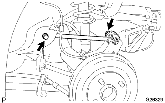

アッパコントロール アームASSY RR LH（4WD） 取り外し
印刷
□ 参 考 □
構成図は
参照
1. リヤタイヤ取りはずし
2. アッパコントロール アームASSY RR LH取りはずし
アクスルハウジングをジャッキなどで支える。

ボルトをはずし、アッパコントロールアーム（フロント側）をボデーから切り離す。
ナットを固定し、ボルトをはずしてアッパコントロールアームを取りはずす。
■ 注 意 ■
ナットは回り止めナットのため、必ずボルトを回して取りはずす。
 参照参照
参照参照